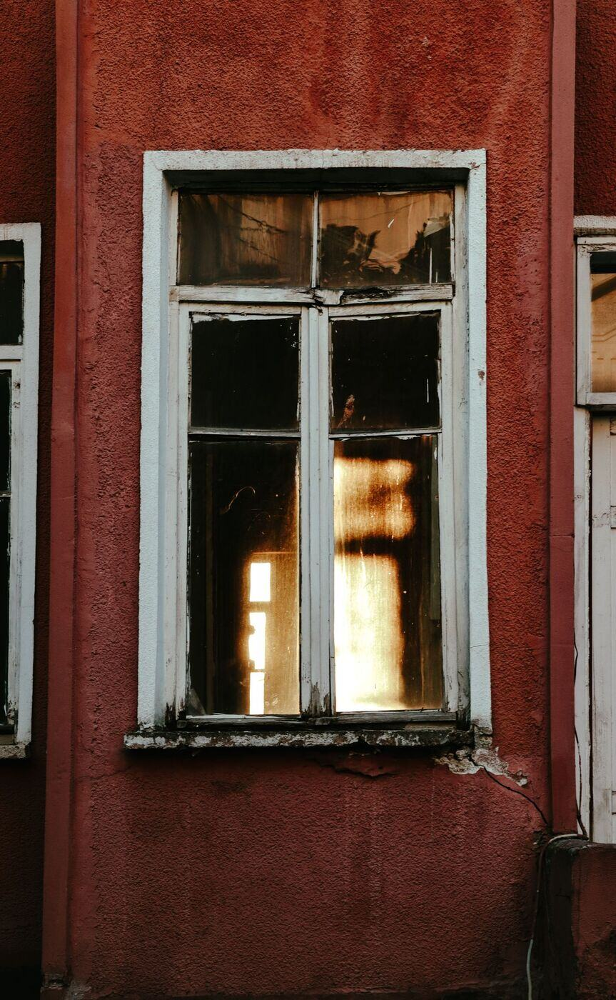

Start with the neighborhood, finish with the property
The Historic Boston-Edison Association describes the district and its residential history. This is useful background for planning work on older architectural features. It is not evidence that a specific sash contains lead or that every house needs the same control. Check the property’s construction and repair records and ask about professional evaluation.

Explain what the window actually does
Does the sash rub against the frame? Is dust collecting in the trough? Does it return after cleaning? Is paint damaged on an accessible sill? Describe those observations and which rooms children use. An inspection can locate lead paint; a risk assessment connects paint condition, dust and other hazards to recommended controls.
Repair, replacement and abatement are not interchangeable
A renovation may repair or replace a window with lead-safe practices. An abatement project is designed to permanently eliminate a documented lead hazard. The proposal should say which project it is and identify the firm’s qualifications. A preservation preference does not decide the hazard-control method; a replacement sales pitch should not decide it either.
Keep exterior approval in the timeline
If your property is subject to local historic-district controls, discuss exterior changes with the Historic District Commission before committing to a new window. Ask what can be retained and what documentation is needed. Resolve that alongside the lead plan so workers do not improvise once the opening is exposed.
What to ask before signing
Request the component list, containment and cleanup arrangements, occupant plan and final check. Ask who examines the work and what happens if samples require corrective work. Keep the reports for future owners and contractors. A painted-over sill can look better without answering whether friction dust or contamination remains.
Common questions
Do original windows have to be replaced if they have lead paint?
Not automatically. Repair with lead-safe practices, enclosure and replacement are different options. The proposal should name the project type and the firm's qualifications.
What is friction dust?
Fine dust created when painted parts rub, like a sash moving in its frame. It can collect in window troughs and on sills without dramatic peeling paint.